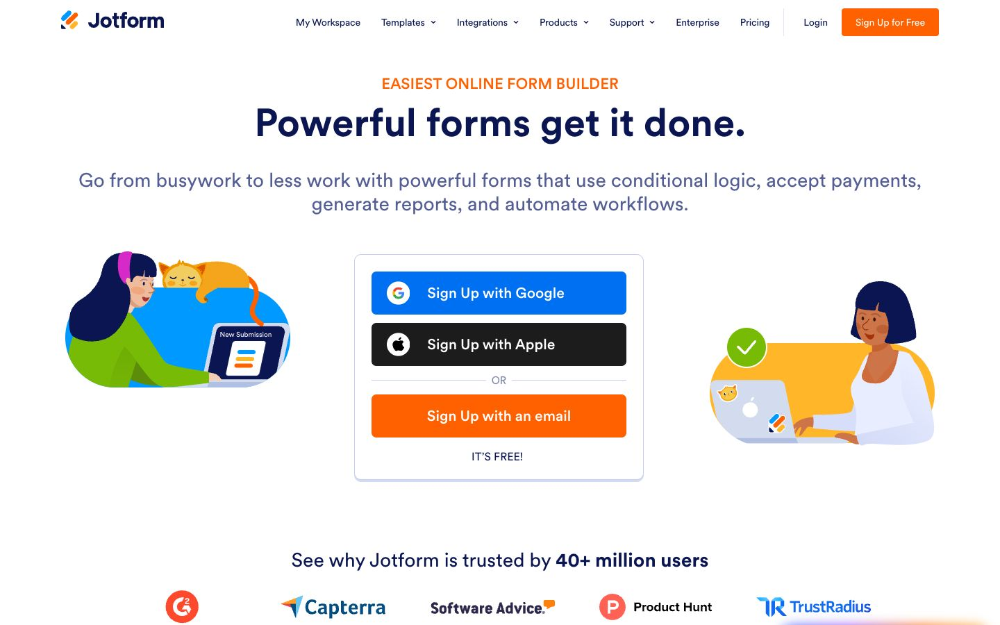

References / Website / 221
Jotform website
Jotform’s home page: two flat figures at laptops sit inside pastel blob shapes on either side of a sign-up card.
- Source
- Jotform
- Creator
- Jotform
- Style
- Corporate Memphis (agent-proposed, not yet reviewed by a person)
- Moods
- Friendly, busy, cheerful
- Evidence
- Captured with
tools/capture.mjs(headless Chrome, 1440 × 900) on 28 September 2026 and inspected. No cookie box covers the page. The screenshot shows the first viewport; the measurement covers up to four screens. - Reviewed
- Rights
- Third-party work, stored with credit for commentary. License: unverified. Rights policy
Observed
- A small orange overline, “EASIEST ONLINE FORM BUILDER”, sits above the heavy navy heading “Powerful forms get it done.”
- In the centre, a white card with a thin border holds three full-width buttons: blue for Google, black for Apple, and orange for email.
- On the left, a woman in a green top with a pink headset types on a laptop inside a bright blue blob; an orange cat sleeps on top of the blob.
- On the right, a woman with brown skin and a navy bob works at a grey laptop in front of a yellow blob, with a green check mark badge.
- Figures have faces with eyes and mouths and roughly natural proportions; fills are flat with small darker shadow shapes.
Why it belongs
The page keeps the style’s scene grammar (a figure, a device, a pastel blob, white space) after the gangly proportions went out of fashion. The measurement finds a median radius of 7 px and shadows on 9% of boxes.
Borrow
Set each spot figure inside one saturated blob shape, and let one small object (a cat, a check mark) break the blob’s outline.
Measured
Machine-extracted by tools/extract-traits.js on . Full measurement.
- Type families
- Circular (100%)
- Type scale ratio
- 1.27
- Median radius
- 7 px
- Mean chroma
- 0.13
- Palette
- #ffffff 44%
- #0c174e 21%
- #fcf1e1 17%
- #454e80 6%
- #24356a 4%
- #6c73a8 3%
- #1c1c1c 2%
- #ff6100 1%

